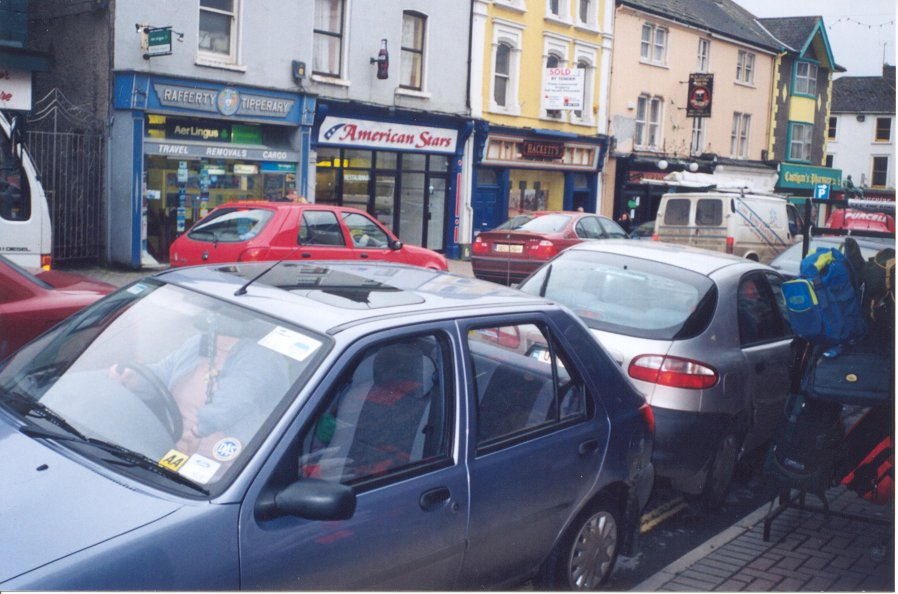

'The Use Of Double Yellow Lines'
There are double yellow lines along lower Gladstone street, from the corner of Slatterys store to the entrance of Superquinn mall. When there should only be a single line from where Slatterys store ends to the entrance of Superquinn mall.
The cars of Speedi Cabs pull up outside their office and park there while there is a double yellow line all the way across in front of their office and Fennessey's Funeral Home.
There are also double yellow lines all the way along the front of the Clonmel Arms hotel, but their coaches of passengers park along in front of the hotel obstructing the traffic to leave off their passengers. The same thing happens when the hotel is holding the reception for a wedding or baptism, the main cars park along in front of the hotel on the double yellow lines.

2